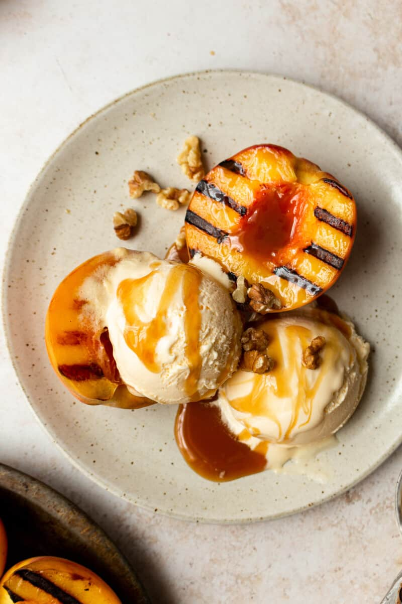

Grilled Peaches and Cream


For love and peaches
Ingredients
- 4 peaches, halved and pitted
- 2 tablespoons clover honey
- 1 cup soft cream cheese with honey and nuts
- 1 tablespoon vegetable oil
Directions
- Preheat a grill for medium-high heat.
- Brush peaches with a light coating of oil. Place pit side down onto the grill. Grill for 5 minutes, or until the surfaces have nice grill marks.
- Turn the peaches over, and drizzle with a bit of honey.
- Place a dollop of the cream cheese spread in the place where the pit was. Grill for 2 to 3 more minutes, or until the filling is warm. Serve immediately.